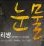

곡설명

2012년 가요계를 휩쓴 프로듀서 이단옆차기
[이단옆차기 프로젝트 Vol.02]
2012년 한해 다작발표, 히트곡제조기, K-POP가수들이 가장 많은 작업을 한 팀, 연관 검색어에 늘 수식어처럼 따라다니는 팀이 있다. 백지영의 "목소리", 씨스타의 "러빙유", 엠블랙의 "전쟁이야", 김장훈, 김태우, B1A4, 주얼리, 달마시안, 허각, 지아, 투개월, 제국의아이들 외 수 많은 국내 가수들의 히트곡을 탄생시키며, 최고의 프로듀서로 자리매김한 이단옆차기 이다.